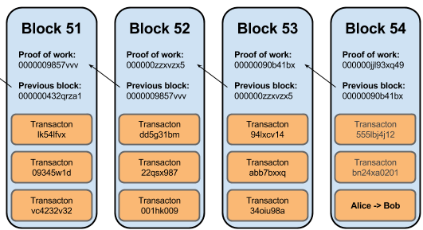

Thomas Dietert
August 23, 2017
We are implementing a private, asset agnostic distributed ledger and smart contract platform.
Talk to me after the presentation, or email me at:
thomas at adjoint dot io
A simple yet broad introduction into the components of Distributed Ledger Technology (DLT).
A hash function is a total function for which each input there is a unique output. To be used in cryptography, it must have these properties:
Given a hash value \(h\) it should be difficult to find any message \(m\) such that \(h = Hash(m)\).
Given an input \(m1\) it should be difficult to find different input \(m2\) such that \(Hash(m1) = Hash(m2)\).
It should be difficult to find two different messages \(m1\) and \(m2\) such that $Hash(m1) = Hash(m2).
\[ \mathbb{Z} = \{..., -1, 0, 1, ...\} \\ \mathbb{F}_p = \mathbb{Z} / p \mathbb{Z} \\ \forall x, y\in\mathbb{F}_p, \ (x + y)\in\mathbb{F}_p \\ \forall x, y\in\mathbb{F}_p, \ (x * y)\in\mathbb{F}_p \\ \exists g \in\mathbb{F}_p, \ \{ \sum_{i=0}^{p} g \} \, \equiv \, \mathbb{F}_p \\ \]
For prime finite fields, every element is a generator point, \(g\).
\[ \mathbb{F}_p = \{0, 1, 2\} \\ 1 + 1 = 2 \quad 2 + 1 = 0 \\ 2 * 1 = 2 \quad 2 * 2 = 1 \]
A blockchain is a replicated state machine maintaining an cryptographically verifiable immutable history of transactions.
A unique, base58 encoded value representing a public key of a node in the network.
A mapping of addresses to balances. All nodes start off with 1000 Nanocoin, and do not
A data structure representing a single atomic modification to the ledger with some extra data to prove validity.
A list of ordered transactions with some extra data to prove validity.
A monotonically increasing chain of blocks in which subsequent blocks are verified based on the data of the preceding blocks in the chain.
Maps a hash of a binary encoded ECDSA Public Key to a unique, irreversible identity that uniquely defines a participant in the network.
x and y values of the Public Key){- src/Key.hs -}
extractPoint :: ECDSA.PublicKey -> (Integer, Integer)
extractPoint pubkey = (x,y)
where
ECC.Point x y = ECDSA.public_q pubkey {- src/Address.hs -}
deriveAddress :: Key.PublicKey -> Address
deriveAddress pub = Address (b58 addr)
where
(x, y) = Key.extractPoint pub
addr = BA.convert $ deriveHash pstr
-- Convert x and y to bytes
pstr = i2osp x <> i2osp y Hash of ECDSA Public Key bytes is adopted from the Bitcoin Protocol:
\[ deriveHash(bytes) = sha256 (sha256 (ripemd160 (sha256 (bytes)))) \]
{- src/Hash.hs -}
sha256Raw :: ByteString -> Digest SHA3_256
sha256Raw x = hash x :: Digest SHA3_256
sha256Raw' :: ByteString -> ByteString
sha256Raw' = BA.convert . sha256Raw
ripemd160Raw :: ByteString -> Digest RIPEMD160
ripemd160Raw x = hash x :: Digest RIPEMD160
ripemd160Raw' :: ByteString -> ByteString
ripemd160Raw' = BA.convert . ripemd160Raw{- src/Address.hs -}
deriveHash :: ByteString -> ByteString
deriveHash = Hash.sha256Raw' . Hash.sha256Raw' . Hash.ripemd160Raw' . Hash.sha256Raw'A Transaction represents an atomic, Ledger state modification.
{- src/Nanocoin/Transaction.hs -}
data Transaction = Transaction
{ header :: TransactionHeader -- ^ Denoting the type of transaction
, signature :: ByteString -- ^ The issuer's serialized ECC signature of the header
}
data TransactionHeader = Transfer
{ senderKey :: Key.PublicKey -- ^ Public Key of transaction issuer
, recipient :: Address -- ^ The address to transfer Nanocoin to
, amount :: Int -- ^ The amount of Nanocoin to transfer
} In order for transactions to be signed by the issuer, they must first be converted to a string of bytes, since cryptonite's sign and verify functions take the argument data as a ByteString.
Nanocoin uses the Data.Serialize module from the cereal serialization library:
{- src/Nanocoin/Transaction.hs -}
import Data.Serialize
...
instance Generic Transaction
instance Serialize TransactionNote: This is also how transactions are encoded before being broadcast to the network.
But sometimes you have to write the serialization function manually...
cryptonite library doesn't define instance of Generic and/or Serialize for us.PublicKey for the senderKey field of TransactionHeader{- src/Key.hs -}
putPublicKey :: S.Putter ECDSA.PublicKey
putPublicKey pubKey = do
let (x,y) = Key.extractPoint pubKey
putInteger x
putInteger y
-- | UNSAFE: Does not check the validity of the point
getPublicKey :: Get ECDSA.PublicKey
getPublicKey = do
x <- getInteger
y <- getInteger
pure $ Key.mkPublicKey (x,y)
-- ... this is annoying.Serialization for TransactionHeader is written in the same way, using both putPublicKey and getPublicKey for it's Serialize instance.
Transactions are valid given certain predicates:
signature field be verified given the senderKey field?{- src/Nanocoin/Transaction.hs -}
data InvalidTxField
= InvalidTxSignature Text
| InvalidTransfer Ledger.TransferError
data InvalidTx = InvalidTx Transaction InvalidTxFieldNote: When validating a transfer transaction in a block, ledger state must be accumulated.
To verify a transaction signature:
{- src/Nanocoin/Transaction.hs -}
verifyTxSignature :: Ledger -> Transaction -> Either InvalidTx ()
verifyTxSignature l tx@(Transaction hdr sigBS) = do
-- Try to decode the serialized signature
case S.decode sigBS of
Left err -> Left $ InvalidTx tx $ InvalidTxSignature (toS err)
Right sig -> do
-- Try to verify the signature w/ the issuer's public key
let pubKey = senderKey hdr
let validSig = Key.verify pubKey sig (S.encode txHdr)
unless validSig $ Left $ InvalidTx tx $
InvalidTxSignature "Failed to verify transaction signature"Validation of the transaction header happens by attempting to transfer Nanocoin from one Address to another.
{- src/Nanocoin/Transaction.hs -}
validateTransfer :: Ledger -> TransactionHeader -> Either InvalidTx Ledger
validateTransfer ledger (Transfer pubKey to amnt) = do
-- Derive the address of the issuer's public key
let from = deriveAddress pk
-- Attempt to apply the transaction to the ledger
case Ledger.transfer from to amnt ledger of
Left err -> do
Left $ InvalidTx tx $ InvalidTransfer err
pure ledger
Right ledger' -> pure ledger'The real implementation uses StateT to accumulate transaction errors.
Blocks are simply ordered lists of transactions, plus a few other things to help us validate their integrity.
{- src/Nanocoin/Block.hs -}
data BlockHeader = BlockHeader
{ origin :: Key.PublicKey -- ^ Public key of Block miner
, previousHash :: ByteString -- ^ Previous block hash
, transactions :: [Transaction] -- ^ List of Transactions
, nonce :: Int64 -- ^ Nonce for Proof-of-Work
}
data Block = Block
{ index :: Index -- ^ Block height
, header :: BlockHeader -- ^ Block header
, signature :: ByteString -- ^ Block signature
} Block hashing is important because it is key in preserving immutability of the block chain.
{- src/Nanocoin/Block.hs -}
-- | Hash a block header, to be used as the prevHash field in Block
hashBlockHeader :: BlockHeader -> ByteString
hashBlockHeader (BlockHeader origin previousHash txs nonce) =
Hash.sha256Raw' $
BS.concat [ rawAddress (deriveAddress origin)
, previousHash
, S.encode txs
, B8.pack (show nonce)
]A Blockchain is constructed by forcing every block to contain a hash of the previous block's header in its header.

Note: In the classic Proof of Work consensus algorithm, the nonce field of the block header is incremented until the hash of the block header has a certain prefix.
To validate a block, several values are needed:
The validity of a block is determined by several predicates:
currentBlockIndex == previousBlockIndex + 1hashBlock previousBlock == previousHash currentBlockproofOfWorkPredicate (hashBlock currentBlock)length (transactions currentBlock) > 0verify originKey signature (encode currentBlockHeader)validateTransactions (transactions block)The validation predicates translate easily into a validateBlock function:
{- src/Nanocoin/Block.hs -}
-- | Validate a block before accepting a block as new block in chain
validateBlock :: Ledger -> Block -> Block -> Either InvalidBlock ()
validateBlock ledger prevBlock block
| index block /= index prevBlock + 1 = Left $ InvalidBlockIndex (index block)
| hashBlock prevBlock /= previousHash (header block) = Left InvalidPrevBlockHash
| not (checkProofOfWork block) = Left InvalidBlockHash
| null (transactions $ header block) = Left InvalidBlockNumTxs
| otherwise = do
-- Verify signature of block
verifyBlockSignature block
-- Validate all transactions w/ respect to world state
first InvalidBlockTx $ do
let txs = transactions $ header block
T.validateTransactions ledger txsThe Ledger is the datatype that the reflects the culmination of blocks.
Therefore, the Ledger is the state resulting from the ordered, sequential application of all transactions in all blocks. In Nanocoin, this manifests in a mapping of addresses (derived from ECC public keys) to the addresses balance.
Definition and operations on the Ledger datatype:
```haskell {- src/Nanocoin/Ledger.hs -}
type Balance = Int
-- | Datatype storing the holdings of addresses newtype Ledger = Ledger { unLedger :: Map Address Balance }
-- Lookup the balance of an Address. This operation returns -- Nothing if the address has never transacted on the network. lookupBalance :: Address -> Ledger -> Maybe Balance
-- | Add an integer to an account's existing balance addBalance :: Address -> Balance -> Ledger -> Ledger
-- | Add an address with 1000 balance to the Ledger addAddress :: Address -> Ledger -> Ledger
-- | Transfer Nanocoin from one account to another transfer :: Ledger -> Address -> Address -> Balance -> Either TransferError Ledger
The application of a transaction to a ledger can be described by a function that takes a transaction and a ledger as arguments and returns the new modified ledger.
Applying a sequence of transactions is sometimes used to validate transactions before attempting to mine a block.
{- src/Nanocoin/Transaction.hs -}
type ApplyM = State [InvalidTx]
throwError :: InvalidTx -> ApplyM ()
throwError itx = modify (++ [itx])
runApplyM :: ApplyM a -> (a,[InvalidTx])
runApplyM = flip runState []
-- | Applies a list of transactions to the ledger
applyTransactions :: Ledger -> [Transaction] -> (Ledger,[InvalidTx])
applyTransactions ledger =
runApplyM . foldM applyTransaction ledgerSince there is only one transaction Transfer, applying a transaction is as simple as throwing an error if the transfer is invalid, or returning the resulting ledger on success:
{- src/Nanocoin/Transaction.hs -}
applyTransaction :: Ledger -> Transaction -> ApplyM Ledger
applyTransaction ledger tx@(Transaction hdr sig) = do
let (Transfer pk to amnt) = hdr
-- Verify Transaction Signature
case verifyTxSignature ledger tx of
Left err -> throwError err
Right _ -> pure ()
-- Apply transaction to world state
let from = deriveAddress pk
case Ledger.transfer from to amnt ledger of
Left err -> do
throwError $ InvalidTx tx $ InvalidTransfer err
pure ledger
Right ledger' -> pure ledger'```
To apply a block to the ledger means to apply every transaction in the block to the ledger state in order, cumulating a world state.
After validating a new block received from the network, a node must then apply the block to it's ledger state.
{- src/Nanocoin/Block.hs -}
-- | Apply block transactions to world state
applyBlock :: Ledger -> Block -> (Ledger, [InvalidTx])
applyBlock ledger = applyTransactions ledger . transactions . headerIn Nanocoin's implementation, applyBlock is also used in the definitions for validateBlock. A block is only valid if all it's transactions are valid.
A node in the Nanocoin network is simply a running instance of the Nanocoin program.
Nodes communicate via the local Multicast network. With multicast, all nodes broadcast to all other nodes simultaneously.
Node Node Node
^ ^ ^
\ | /
\ | /
v v v
Node <---> (multicast) <---> Node
^ ^ ^
/ | \
/ | \
v v v
Node Node NodeA node carries around some stateful values so that over the lifetime of the running node, it's interal state can change; In Nanocoin, this is the NodeState datatype.
{- src/Nanocoin/Network/Node.hs -}
data NodeState = NodeState
{ nodeConfig :: Peer -- ^ P2P info (rpc port, p2p port)
, nodeKeys :: KeyPair -- ^ Node ECC key pair
, nodeSender :: MsgSender -- ^ Function to broadcast a P2P message
, nodeReceiver :: MsgReceiver -- ^ The source of network messages
, nodeChain :: MVar Block.Blockchain -- ^ In-memory Blockchain
, nodeLedger :: MVar Ledger.Ledger -- ^ In-memory ledger state
, nodeMemPool :: MVar MemPool.MemPool -- ^ Mempool to collect transactions
} Note: In Haskell, if you know that there is some chance that multiple processes or threads may need to alter the same statful variable MVars come in handy.
As mentioned before, the Ledger is the stateful representation of the current block chain.
When a node receives a valid block, it updates the nodeLedger field of NodeState by applying the block's transactions to the MVar.
{- src/Nanocoin/Network/Node.hs -}
applyBlock :: NodeState -> Block -> Block -> IO ()
applyBlock nodeState prevBlock block = do
ledger <- getLedger nodeState
case Block.validateAndApplyBlock ledger prevBlock block of
Left err -> putText $ show err
Right (ledger', itxs)
| null itxs -> do
-- If no invalid transactions, add block to chain
modifyBlockChain_ nodeState (block:)
-- Remove transactions from memPool
let blockTxs = Block.transactions $ Block.header block
modifyMemPool_ nodeState $ MemPool.removeTransactions blockTxs
-- Update ledger to new ledger state
setLedger nodeState ledger'
| otherwise -> putText "Received invalid block."TransactionMsg.When a node issues a transaction, it broadcasts it to all peers in the network, and all peers add the transaction to their MemPools.
{- src/Nanocoin/MemPool.hs -}
newtype MemPool = MemPool
{ unMemPool :: [Transaction]
} deriving (Show, Eq, Generic, Monoid, ToJSON)
addTransaction :: Transaction -> MemPool -> MemPool
addTransaction tx (MemPool pool) = MemPool (pool ++ [tx])
removeTransactions :: [Transaction] -> MemPool -> MemPool
removeTransactions txs (MemPool pool) = MemPool $ pool \\ txsIn order for nodes to talk to each other, they need a protocol on which they all agree.
The messaging protocol defines what messages nodes will send to each other, and how node's should respond to those messages.
The key to good distributed network protocols is simplicity.
The messaging protocol used in Nanocoin is simple.
{- src/Nanocoin/Network/Message -}
data Msg
= QueryBlockMsg Int
| BlockMsg Block
| TransactionMsg Transaction
-- | Type synonyms for Multicast send/receive functions
type MsgSender = M.Sender Msg
type MsgReceiver = M.Receiver MsgA consequence of this simplicity and the use of multicast is that the network is often flooded with messages.
On QueryBlockMsg n: 1) Query the current block chain state 2) If the block with index n exists, i. then respond with a BlockMsg blockAtIndexN ii. else dont respond
On BlockMsg block: 1) Query the latest block in the chain 2) Attempt to apply the new block to the ledger state 3) If applying the block succeeded i. then respond with a QueryBlockMsg (index block + 1) ii. else do nothing
On TransactionMsg tx: 1) Query the current ledger state 2) If the transaction is valid i. then add it to the mempool ii. else do nothing
Consensus is how nodes in the network agree on what blocks are valid or not.
Sometimes these consensus algorithms can be quite complex and warrant the implementation of an entire protocol to ensure consensus is reached.
In Nanocoin, classic Proof of Work consensus is used, and acheived by adding a final predicate to block validation.
In classic PoW, there is a notion of difficulty when it comes to mining a block, determining how "hard" the node will have to work to mine the block.
For Nanocoin, the difficulty is decided by the block index:
\[ difficulty(index) = round(ln(index)) \].
The difficulty calculated determines how many zeros must prefix the resulting sha256 hash of the contents of the block header.
nonce field equal to 0{- src/Nanocoin/Block.hs -}
proofOfWork
:: Int -- ^ Difficulty measured by block index
-> BlockHeader -- ^ Header to hash with nonce parameter
-> BlockHeader
proofOfWork idx blockHeader = blockHeader { nonce = calcNonce 0 }
where
difficulty = calcDifficulty idx
prefix = toS $ replicate difficulty '0'
calcNonce n
| prefix' == prefix = n
| otherwise = calcNonce $ n + 1
where
headerHash = hashBlockHeader (blockHeader { nonce = n })
prefix' = BS.take difficulty headerHash
calcDifficulty :: Int -> Int
calcDifficulty = round . logBase (2 :: Float) . fromIntegralOne of the most notable results of the Proof of Work is that it is hard to generate a block, but easy to verify the work.
Hard:
"For this PoW implementation the average nonce computed is
16^n, so when the length of the chain surpasses 12 (round(ln(n)) == 4) it begins to take several seconds to mine each block. Asnsurpasses 23, mining a block could take well over 10 minutes."
Easy:
{- src/Nanocoin/Block.hs -}
checkProofOfWork :: Block -> Bool
checkProofOfWork block =
BS.isPrefixOf prefix $ hashBlock block
where
difficulty = calcDifficulty $ index block
prefix = toS $ replicate difficulty '0'Install the Stack build system:
$ stack setup
$ stack install nanocoin
$ nanocoinRunning nanocoin will spin up a Node with an RPC server running on localhost:3000 and a P2P server communicating with basic UDP Multicast on port 8001.
You can specify which port th run the RPC server on, and from which directory to load a node's public/private ECC key pair. If you do not supply a KEYS_DIR, the node will generate a random key pair with which to issue transactions and mine block.
Usage: nanocoin [-p|--rpc-port RPC_PORT] [-k|--keys KEYS_DIR]
Nanocoin's RPC interface is implemented via an HTTP web server that serves as both a command and query entry points.
Simply visit localhost:XXXX/<cmd-or-query> in your browser to interact with the node:
Queries - ask the node about it's state
Commands - tell the node to do something
Note: The implementation resides in src/Nanocoin/Network/RPC.hs
/addressView the address of the current node (derived from the nodes public key)
/blocksView the blocks on the block chain, including their transactions.
/mempoolView the current collected transactions that have not yet been included in a block on the network.
/ledgerView the current state of the ledger, representative of all the transactions of all the blocks applied in order to result in a cumulative ledger state.
/mineBlockAttempt to mine a block containing the transactions currently in the node's mempool. This will fail if there are no transactions in the mempool.
/transfer/:toAddress/:amountIssues a Transfer transaction to the network, transferring the specified amount of Nanocoin from this node's account to another node's account designated by toAddress. If you try to transfer more Nanocoin than you have, the transaction will be rejected during the block mining process and purged from all nodes' mempools.
Merkle Trees
CLI
Testing
Database
cloud-haskellNew Messaging Protocol